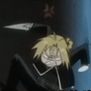

Nokia
 De: La Frikipedia, la enciclopedia extremadamente seria.
De: La Frikipedia, la enciclopedia extremadamente seria.
| De la serie empresas malignas:
|
| Noquia
|
|
|
| Perteneciente al grupo:
|
Narcotraficantes Empresarios
|
| Se dedica a:
|
Venta de droga y celulares
|
| País de origen:
|
Varios
|
| Año de fundación:
|
???
|
| Super Presidente:
|
Pikachu
|
| Nivel de maldad:
|
Mucha para que tu mente la entienda
|
| Empresas absorbidas:
|
|
| Número de empleados:
|
Desconocidos
|
| Atentados contra la humanidad
|
Creación del lumia
|
| ¿Se aconseja trabajar aquí?
|
Si tienes algo contra australia, pues si.
|
| ¿Se recomienda el boicot?
|
Ni idea.
|
| Cantidad de denuncias:
|
125.347 y aumentando cada dia...
|
| Sitio web:
|
Página oficial de Noquia
|
Definicion
Nokia, empresa de Imbeciles o mejor conocidos como siomes, creada por los Wombats en su intento de Dominar el mundo .
El fin de esta empresa es poder controlar las mentes de las personas como vos, el que esta leyendo esto, para asi poder ellos crear el futuro de la tierra
Nokia, esta asociada con la pagina Fotolog y juntos pudieron crear a unos seres extraños conocidos como Floggers.
Los wombats pusieron como lider de los Floggers a Pikachu para atemorizar a los que se interpongan en sus planes.
Como todos , tienen que tener enemigos , si vos no tenes un enemigo , porfavor te pido que... TE VAYAS A LA CONCHA ( mejor conocida como vagina ) DE TU HERMANA Y SI NO TENES A LA DE TU MADRE*.
Sus enemigos son los Emos, criaturas creadas por Satanás que se creen que lo unico que existe es la muerte.
Bueno, ya me estoi "yendo" lejos con lo de los floggers.
Ahora voi a decir que ademas de dominar el mundo, los de Nokia quieren destruir australia ya que ahi se originan los canguros y son una gran amenaza para Nokia= Narcos Olorosos Ke Invaden Australia
Los de la empresa ademas de vender celulares venden droga , asi ganan mucho dinero para hacer un ejercito que destruya Australia por completo.
Nokia se unio con Carl Johnson (del gta = Gangsters Toman Australia ) y con Edward Elric (de FMA= Faloperos Matan Australia ) para poder continuar aniquilando Australia.  Edward Elric,no te metas con el
Estudios
Noticias de ultima hora demuestran que los usuarios que tienen un movil (o droga marca nokia, no importa) sufren ataques de epilepcia. Tambien se ha demostrado que los usuarios demuestran tendencias homosexuales. Estudios realizados por CSI, demuestran que hay pinturas toxicas. Han realizado pruebas para vacunas que no afectaran al cuerpo humano pero despues de inpensables secciones de sexo estudios todavia no tenemos ni la mas puta idea resultados concluyentes. No se preocuopen. Les traeremos mas noticias dentro de poco despues de mis vacaciones en Daltonia
Gamas
Para los <s>idiotas que no sepan lo que es "gama" se lo explicamos: Es una letra giega Son los modelos de la marca Nokia los cuales pueden ser:
Son las originales. No aceptes sustitutos.
- 3330 (Atrévete a insultarlo...)
- E66
- N85
- E71
- 6600 f$*@
- 5800
- N79
- 7610 superchota
- 7510 superchota
- 7310 superchota
- 7210 superchota
- 2680 shiva
- 6600 shiva
- 3600 shiva
- 3610 f$*@ bonita
- 666
- 666 f$*@
- 123 con blutú
- 456 para tu vieja
- 789 con vibrador
para masturbarte
- 3700 un celular
de m$*@@a
- 2300 un celular que no celulea
(m$*@@A)
- 9422 con emoticones de Chuck Norris
- 3152 con TV
- 210 un cuadrado de carton
- 8521 para los weones (tú)
- 3620 al wea mas grande y bultosa del mundo
- Churri Wachurri
- E51 Sin camara
que m$*@@a de celular
- 3120 clasico
- 7990 prisma cristal
- 2600 clasico
- 1209
- 3110 evolve
- 8800 arte
- N82
- E51
- N81 8GB (noo,ambos son el mismo)
- Puntochico
- E90
- 7070 prisma
- 6300 i
- N96
- N78
- 6210 navegador
- 7220
- 5230 expreso
polar musica
- 5220 expreso musica
- 6212 clasico
- 1680 clasico
- 5610 expreso musica
- 1200 viejo
- 6120 clasico
- E65
- E61i
- 2630
- 2760
- 8800 arte carbon (que negros)
- 1100 El Único. El Verdaero. El Indestructible. El Nokia 1100.
- Consola de videojuegos se copian del gameboy.
- N-Gage: Consola portátil nada más, bajas juegos y otras chorradas
Como veran casi todos son de la gama chachi... jeje. Lo estamos terminando por favor sean pacientes. Proceso en construccion.
Sabias que...

Moe, pobrecito

Noentiendo, aliada de Nokia
- ...Sus telefonos son usados en grandes edificaciones?
- ...Hay empresas como Sony y LG que quieren que nokia caiga?
- ...Si tampoco tenes madre tenes que irte a la concha de la mujer mas cercana a ti?
- ...Nokia le construyo a Moe su taberna a cambio de que se prostituyera?
- ...Si estas leyendo esto es porque queres tener mas conocimientos?
- ... Los canguros matan 100 wombats por dia?
- ...Hay gente que piensa que Nokia significa Nacion de Ociosos Ke Inhalan Aspirinas?
- ...Si te fijas en tus manos veras que hay unas lineas que forman una cara?
- ...Seguramente ya te fijaste en tus manos y no habia nada? xD
- ...Nokia quiere sacar el wombat interior de Naruto para asi poder apoderarse de la tierra
- ...Hay muchos que confunden a los Emos con los Darks?
- ...La empresa Nintendo es aliada de Nokia?
- ...Hay gente estupida como el baboso que supervisa las modificaciones del los inciclopedistas que lee y bannea estas cosas
- ...Hay un chico llamado Martin Vignati que tiene un odio incomparable contra los floggers?
- ...Nokia viajo al pasado e inicio la primera guerra mundial?
- ...Los celulares Nokia emiten ondas que vuelven siomes a las personas?
- ...Si todo esto no te causa gracia es porque tu mente es muy pequeña para entenderlo?
- ...Nokia fue unos de los pocos que pudo derrotar a Liu Kang
- ...Nokia te esta vigilando en este momento?
- ...Tu mamá es policia?
- ...las centrales de nokia espian todas tus conversasiones secretamente y liberan pequeñas cantidades de
drogas (a traves de la radiación) polvos que haran tu vida mucho mejor.
- ...El wombat fundador de Nokia fue enemigo de Moisés?
- ...No es lo mismo Llegar a la meta que Te la meta al llegar ?
- ...Nokia le dio la idea a Bin Laden de crear el grupo Al Qaeda?
Porcentaje de gente que se vuelve siome por dia
- Argentina: 35% de personas
- Mexico:30% de personas
- EE.UU:35% de personas
Vease tambien (para putos que quieren seguir riendose)
Enlaces
Autor(es):
- Fordus
- Aque
- El Sevillano
- Veni Vidi Vici
- Jag
- Dark temptation
- ChevalierSasha
- Sergikpo
- Kevrochi
- Edduuu 07
Frikipedia 2005-2016, Licencia
GFDL 1.2 - Extraído por FrikiLeaks